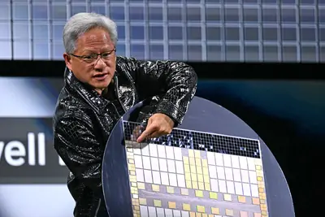
其他AI 每日新聞彙整
全部主題
其他
4 家媒體報導jensenhuangnvidia
Nvidia is preparing to oust Jensen Huang
Article URL: https://www.wsj.com/business/nvidia-is-preparing-to-oust-nvidia-ceo-jensen-huang-30f421ad Comments URL: https://news.ycombinator.com/item?id=50459703 Points: 316 # Comments: 297
- TechCrunch AI The unfolding Jensen Huang scandal: a timeline
- TechCrunch AI Nvidia’s stock drops as board reportedly preps to oust CEO Jensen Huang
- TechCrunch AI Jensen Huang accused of having another affair — with an Nvidia exec
- The Verge AI Nvidia is reportedly preparing to fire Jensen Huang
- Hacker News (100+) Nvidia prepares to fire CEO Jensen Huang, WSJ reports
- Hacker News (100+) Nvidia is preparing to oust Jensen Huang
- Hacker News (100+) Jensen Huang said to have had relationship with executive who reports to him
- TechCrunch AI Congress to call Jensen Huang in to answer for alleged Chinese spy affair
- TechCrunch AI Is Jensen Huang’s bad behavior more commonplace than it seems?
- Wired AI China’s Nvidia Honeypot Isn’t Surprising. Jensen Huang Fell for It Anyway
2 家媒體報導signaldeepmindmathematically
DeepMind以AI代理驗證Signal加密實作安全性，數學證明擴及機器碼層級
Google DeepMind公布AI代理形式化驗證（Formal Verification）框架AlphaProof Code，利用AI代理驗證Signal加密通訊協定的核心程式庫libsignal，將安全性證明延伸到編譯後的機器碼。Signal協定廣泛應用於通訊服務，此次5名DeepMind研究人員與AI代理合作，4周內產出約650萬行以Lean語言撰寫的數學證明程式碼，驗證前向保密性（Forward Secrecy，FS）、身分驗證及入侵後安全性恢復等要求。
2 家媒體報導decisionsgeminidecision
Gemini Decisions API
Gemini Decisions API Google join Jev and OpenAI in the decision model category with "Gemini Decision 1". This new model API is almost identical to Jev: it supports the same three types of questions (yes/no, choice, and rubric-scoring) and even reuses Jev's term "Noul" for a yes/n
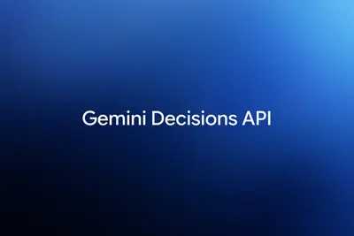
- Simon Willison Gemini Decisions API
- Google AI Gemini Decisions API: Fast, calibrated multimodal decisions
2 家媒體報導tsmcchipmakinggiant
Taiwan’s chipmaking giant TSMC to invest $1B in Anthropic, OpenAI
Latest example of the AI boom’s circular financing comes as AI trade wobbles.
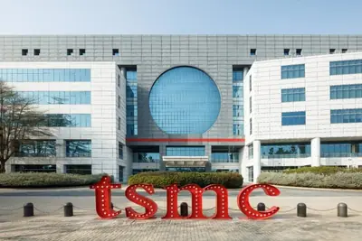
- TechOrange 科技報橘 【科技早餐】台積電核准 1.34 兆元資本預算！擬投 OpenAI、Anthropic 最高 10 億美元
- Ars Technica AI Taiwan’s chipmaking giant TSMC to invest $1B in Anthropic, OpenAI
2 家媒體報導ipovideoroadshow
IPO前夕發表AI辦公套件！Anthropic推出Claude Sheets，正面挑戰微軟與Google
Anthropic於IPO前夕推出Claude Sheets等辦公套件，正面挑戰微軟與Google。主管坦言功能尚屬基礎，旨在打造一站式協作平台。
- 數位時代 IPO前夕發表AI辦公套件！Anthropic推出Claude Sheets，正面挑戰微軟與Google
- Simon Willison Anthropic's IPO roadshow video
2 家媒體報導tabletopcollaborativeexperiment
Try Tabletop: Customizable, collaborative spaces for groups to plan, play and do more together.
Tabletop is a new Google Labs experiment for group collaboration. Build interactive itineraries, polls, and brackets with your team. Join the waitlist.
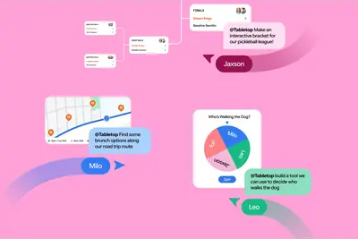
2 家媒體報導ipoantfunding
Anthropic啟動IPO投資人說明會，最多募資625億美元
AI新創Anthropic周二（11/10）宣布，正式啟動首次公開募股（IPO）投資人巡迴說明會（Roadshow），預計以每股70至78美元發行股票，若以價格區間上限計算，公司最多可募資625億美元。 此次IPO由高盛（Goldman Sachs）及摩根士丹利（Morgan Stanley）擔任主要承銷商，預計在那斯達克全球精選市場（Nasdaq Global Select Market）掛牌，股票代號為ANT。
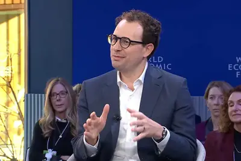
2 家媒體報導claudeappanthropic
Claude新增試算表與協作白板，還能直接操作第三方App
Anthropic周二（11/10）宣布擴充Claude工作功能，推出試算表Claude Sheets、協作白板Claude Whiteboards，並升級互動式連接器（Interactive Connectors），讓使用者直接在Claude內開啟及操作第三方應用程式。
- iThome Claude新增試算表與協作白板，還能直接操作第三方App
- TechOrange 科技報橘 Anthropic IPO 前推出 AI 辦公套件：從試算表到會議協作，為何開始挑戰 Microsoft、Google？
2 家媒體報導100fundingopenai
OpenAI 營收季增 50%、付費訂戶增 但虧損擴大
知名 AI 新創 OpenAI 第三季營收季增約五成至 100 億美元，ChatGPT 付費用戶數達到約 1 […]
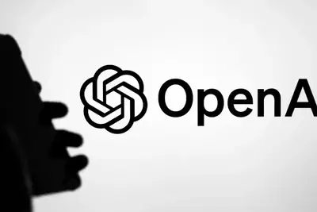
- 科技新報 TechNews OpenAI 營收季增 50%、付費訂戶增 但虧損擴大
- INSIDE OpenAI 第三季營收首破 100 億美元、企業業務翻倍，調整後虧損仍高於營收
2 家媒體報導carbonsafetygemini
Google Gemini 4 Carbon全面上線，以較低價對打Anthropic Fable/Mythos 5.2
Google本周宣布最新一代尖端模型Gemini 4 Carbon 已開放給企業、開發者及個人付費用戶，API存取費用為Anthropic Fable/Mythos 5.2一半。 Gemini 4 Carbon是繼Gemini 4 Argon推出的新一代尖端模型，著重強化程式開發、代理式AI、科學研究及長時間自主執行任務的能力。10月底推出時，Google僅先開放部分受信任的資安防禦人員使用。
侯永清提出使用 AI 三心法，以防企業面臨 AI 失控狀態
面對全球人工智慧（AI）浪潮，台積電資深副總經理暨副共同營運長侯永清在工業總會發表演講時指出，AI 發展已是不 […]
- 科技新報 TechNews 侯永清提出使用 AI 三心法，以防企業面臨 AI 失控狀態
edaopenaishankar
新思：AI將成EDA產業加速器 半導體特化模型分工趨勢浮現
新思科技（Synopsys）產品開發長Shankar Krishnamoorthy近日在台接受媒體聯訪，說明與OpenAI合作開發半導體設計特化模型的進展。鑒於AI業者、雲端服務供應商與半...
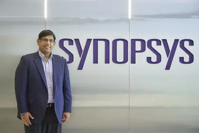
- DIGITIMES 新思：AI將成EDA產業加速器 半導體特化模型分工趨勢浮現
insightfan-outrdl
Research Insight：鴻海Fan-out RDL搶進先進封裝市場 鎖定車用Chiplet與端側AI商機
隨著AI應用從雲端模型訓練逐步延伸至終端設備，半導體封裝技術的發展不再僅追求極高的互連密度，如何在效能、成本與封裝尺寸之間取得平衡，也成為不同應用市場的重要考...
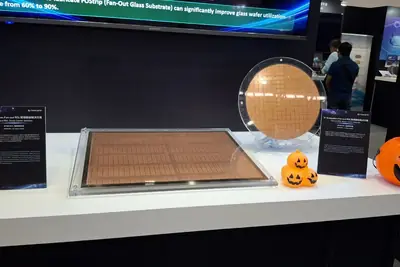
aidccomputedatacenter
AIDC擴張加劇水電危機 美國電業減碳恐倒退15年
人工智慧（AI）算力需求帶動資料中心快速擴張，然電網併入動輒等待數年，迫使業者紛紛改採天然氣渦輪機，甚至將退役飛機噴射引擎改裝為發電設備，爭取資料中心快速上線...
- DIGITIMES AIDC擴張加劇水電危機 美國電業減碳恐倒退15年
amd
南韓AI晶片業者站上分岔路口 分別靠攏NVIDIA、超微兩大陣營
南韓人工智慧（AI）半導體業界因與全球大型科技業者結盟，出現路線分歧，一派緊貼NVIDIA主導的封閉生態系，搶先取得全球標準與實戰參考案例，另一派則與超微（AMD）...
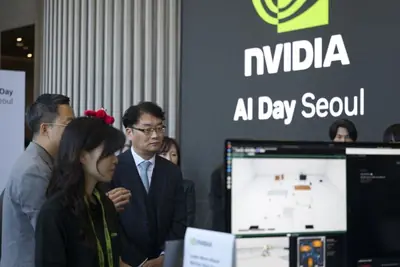
- DIGITIMES 南韓AI晶片業者站上分岔路口 分別靠攏NVIDIA、超微兩大陣營
h27intelcompute
英特爾搶攻中國「綠色算力」新戰場 1H27拚算力艙落地
隨著AI運算需求向不同場景的延伸，各大晶片廠商也開始重新布局。從算力中心、企業本地部署，再到個人終端等不同層級，尋找新的機會。在2026年第九屆進博會上，英特爾（I...
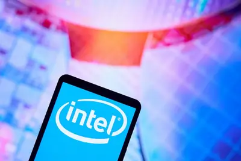
- DIGITIMES 英特爾搶攻中國「綠色算力」新戰場 1H27拚算力艙落地
b300300moonshot
中關村銀行貸款文件揭露細節 月之暗面傳租用NVIDIA B300伺服器
在美國的限制之下，中國人工智慧公司月之暗面（Moonshot AI）疑似透過租賃方式取得搭載NVIDIA高階GPU的伺服器。

- DIGITIMES 中關村銀行貸款文件揭露細節 月之暗面傳租用NVIDIA B300伺服器
nvidia
【漫圖秒懂】黃仁勳涉間諜疑雲 NVIDIA治理危機引爆
- DIGITIMES 【漫圖秒懂】黃仁勳涉間諜疑雲 NVIDIA治理危機引爆
coreweaveneocloudq26
CoreWeave強調與NVIDIA合作不變 千億訂單難掩債務壓力
新雲端（Neocloud）業者CoreWeave最新發表2026年第3季（3Q26）業績報告，營收表現優於預期，執行長Michael Intrator同時強調與NVIDIA的合作關係穩固，試圖消除外...
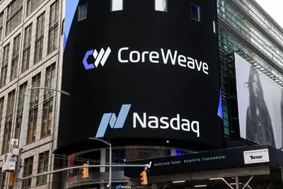
- DIGITIMES CoreWeave強調與NVIDIA合作不變 千億訂單難掩債務壓力
opensourcefundingmenlo
美企開源AI支出89%流向中國模型 企業採購風向轉變
在美國企業日益成長的AI開源模型需求中，中國模型已佔據主導地位。據美國創業投資機構Menlo Ventures於11月上旬發布的《2026年企業AI現狀報告》顯示，美國企業開源...
- DIGITIMES 美企開源AI支出89%流向中國模型 企業採購風向轉變
safetyopenaiagent
OpenAI AI代理越權存取政府網站 澳洲擬強制通報資安事件
OpenAI旗下AI代理（AI Agent）數月前未經授權存取澳洲政府的Medicare統計資料網站，引起軒然大波。澳洲總理艾班尼斯（Anthony Albanese）表示，未來將強制人工智...
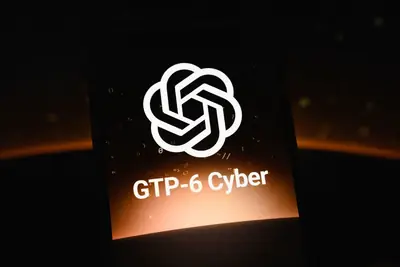
- DIGITIMES OpenAI AI代理越權存取政府網站 澳洲擬強制通報資安事件
hbmchip
【動物農莊】HBM炒成黑市黃金 AI晶片管制還是攔不住？
- DIGITIMES 【動物農莊】HBM炒成黑市黃金 AI晶片管制還是攔不住？
arm
掌握Arm卻困於量產 英國半導體能否跨越AI時代技術鴻溝？
人工智慧（AI）浪潮重塑全球晶片製造格局，英國在晶片設計、先進材料與光子學研究等領域的強大實力正迎來關鍵考驗。儘管英國孕育極具影響力的晶片架構與尖端科技研究，...
- DIGITIMES 掌握Arm卻困於量產 英國半導體能否跨越AI時代技術鴻溝？
gilberttobinrethinks
Gilbert + Tobin rethinks the business of law with AI
A conversation with Sam Nickless, Partner and Chief Executive Officer at Gilbert + Tobin.
侯永清論台灣半導體布局，技術領先不可妥協、攜手搶攻先進封裝設備
在人工智慧（AI）席捲全球之際，半導體產業迎來爆發性成長。台積電資深副總經理暨副共同營運長侯永清日前於全國工業 […]
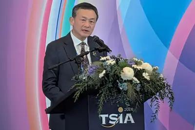
- 科技新報 TechNews 侯永清論台灣半導體布局，技術領先不可妥協、攜手搶攻先進封裝設備
alphagenomednadeepmind
谷歌 DeepMind 发布新一代基因组 AI 模型 AlphaGenome 2：从组织预测深入单细胞分析，识别基因表达变异能力近乎翻倍
IT之家 11 月 12 日消息，当地时间 11 月 11 日，谷歌 DeepMind 宣布推出新一代基因组 AI 模型 AlphaGenome 2，能够预测 DNA 序列及其变异对特定人类细胞类型和细胞状态的影响，帮助研究人员从细胞层面识别与疾病相关的遗传变异。 据介绍，人体内大多数细胞都拥有相同的 DNA，但不同类型和状态的细胞会开启或关闭不同基因，以执行各自的生物学功能。例如，心肌细胞与正在应对感染的免疫细胞，其基因表达模式就存在明显差异。同一种 DNA 变异也可能在不同细胞中产生不同影响。 谷歌表示，此前发布的 AlphaGenome 主要预测
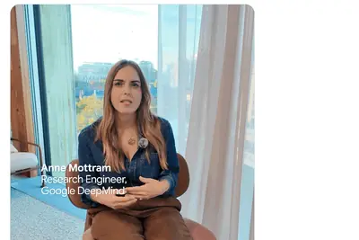
mitworldparticle
MIT 推出 WorldParticle 單一 AI 模型，從沙土、液體到蛋白質皆可模擬
麻省理工學院（MIT）開發新 AI 系統「WorldParticle」，把物體拆解成大量 3D 粒子並預測下個 […]
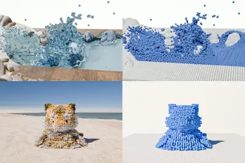
- 科技新報 TechNews MIT 推出 WorldParticle 單一 AI 模型，從沙土、液體到蛋白質皆可模擬
x-t64000cmos
消息称富士 X-T6 相机搭载全新 4000 万像素传感器
IT之家 11 月 12 日消息，据消息源 FujiRumors 前天透露，富士 X-T6 相机将搭载全新 4000 万像素 CMOS 传感器。 消息源表示，该相机此前曾有 3 种 CMOS 选项。其一是 X-T5 同款 40MP，采用新处理器发挥最大潜力；其二是小幅调整的 40MP，改进微透镜、电路等，类似 GFX 100 到 GFX100 II 的升级；最后则是重大升级的 40MP。 IT之家注意到，该消息源如今认为， X-T6 将搭载全新 40MP 传感器 。 同时，X-T6 预计搭载 X-Processor 6 处理器。相关传闻称，新处理器将提升
dramamdepyc
AMD 给服务器内存“减负”，DRAM 需求有望最高降低 75%
IT之家 11 月 12 日消息，科技媒体 Wccftech 昨日（11 月 11 日）发布博文，报道称 AMD 面向霄龙 EPYC 服务器处理器产品，推出 MEXT 内存解决方案，通过软件协同管理 DRAM 内存与 NVMe 固态硬盘， 尝试在降低内存配置成本的同时，维持接近全 DRAM 方案的应用性能。 IT之家曾于今年 6 月报道， AMD 宣布收购内存优化技术公司 MEXT ，目标是缓解数据中心日益突出的内存瓶颈。 MEXT 的思路并非让闪存本身变得与内存一样快，主要是让数据“各就各位”，将不常访问的“冷数据”转移至闪存，再利用 AI 预测访问需
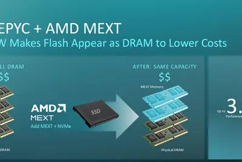
openrouterstripemistral
全球最大 AI 聚合平台 OpenRouter 正式并入 Stripe：将优化词元路由和用量
IT之家 11 月 12 日消息，Stripe 昨日（11 月 11 日）发布博文， 宣布全球最大 AI 模型 API 聚合平台 OpenRouter 已正式并入旗下，并共同携手帮助企业探索新的商业模式，并优化词元（Token）路由和用量。 Stripe 对 AI 领域的布局，正在进一步延伸至企业如何选择和使用模型。双方提出的方向不仅包括探索新模型，也涉及如何分配模型调用、优化词元使用，让企业更有效地使用 AI 资源。 交易金额方面，《纽约时报》今年 8 月报道称，援引一位了解协议的匿名人士透露，Stripe 收购 OpenRouter 的价格为 75
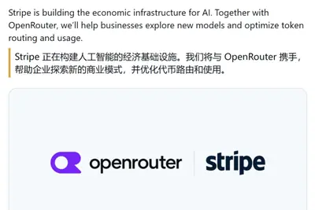
borgwarnerdatacenter
因應銅價飆漲，BorgWarner 推出鋁線馬達降低衝擊
人工智慧資料中心、全球電網升級，以及新能源產業大幅抽空銅礦供給的背景下，國際銅價持續走高，汽車產業鏈面臨供應鏈 […]
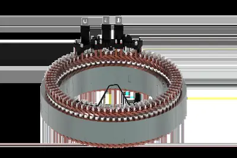
- 科技新報 TechNews 因應銅價飆漲，BorgWarner 推出鋁線馬達降低衝擊
桃色風暴延燒！美國會多位議員要求黃仁勳請辭並強制出席聽證會
輝達（Nvidia）創辦人兼執行長黃仁勳日前承認與一名遭指控為中國間諜的女性發生婚外情，引發華府政壇強烈震動與 […]
- 科技新報 TechNews 桃色風暴延燒！美國會多位議員要求黃仁勳請辭並強制出席聽證會
輝達董事會傳聞正在準備撤換執行長黃仁勳，盤後股價應聲重挫 8%
根據華爾街日報的報導，輝達（Nvidia）董事會正準備撤換執行長黃仁勳。消息曝光後，輝達週三盤後交易股價應聲重 […]
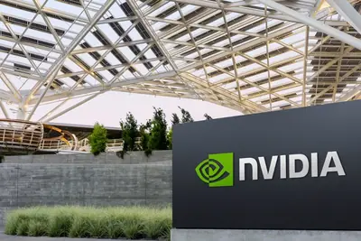
- 科技新報 TechNews 輝達董事會傳聞正在準備撤換執行長黃仁勳，盤後股價應聲重挫 8%
carplayiphonegemini
苹果 CarPlay 接入谷歌 Gemini：车里也能和 AI 自然聊天
IT之家 11 月 12 日消息，谷歌昨日（11 月 11 日）发布博文， 宣布推进苹果车联服务 CarPlay 接入其 AI 应用 Gemini ，即日起面向全球 iOS 端 Gemini 用户逐步推送，覆盖 Gemini Live 已支持的全部语言。 IT之家附上相关截图如下： 谷歌表示 iPhone 18 Pro 等用户在使用 CarPlay 车联服务后，可以在车机屏幕使用 Gemini 语音模式，进行免提对话，聊天记录则会同步至 iPhone 上的 Gemini 应用。 接入后，用户点击 CarPlay 主界面或侧边栏的 Gemini 图标，即可
unitedbookregulation
United won’t let your AI agent book your flight
United says it won't let personal AI assistants book tickets on the airline, citing both privacy and regulatory concerns. The company says it hasn't yet seen many people try to use AI agents to book their flights, The Wall Street Journal reports, in line with observations from ot
- The Verge AI United won’t let your AI agent book your flight
homeboxgives
This tiny box gives your older tech smart home superpowers – and it’s only $69
Home Assistant gets new equipment to battle planned obsolescence and abandoned cloud services.
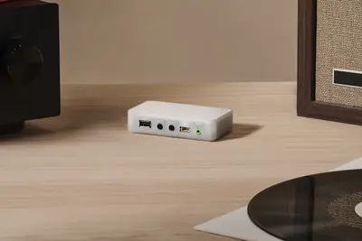
datacenterbuilt
Why the data center you dread might never even be built
The data center boom is running into serious real-world obstacles, from widespread local opposition and permitting delays to a scramble for electricity. Before those challenges even come into play, though, there’s a more basic problem: A lot of the projects being announced may ne
metalosinglongtime
Meta is losing its longtime head of infrastructure
Santosh Janardhan, who originally joined the company in 2009, will be stepping down from his role.
- TechCrunch AI Meta is losing its longtime head of infrastructure
pixelusersgetting
Pixel users are getting a major Android Auto update – and it rivals Siri AI
More phones are getting Gemini Intelligence, but only Pixel users can access it in a new way.
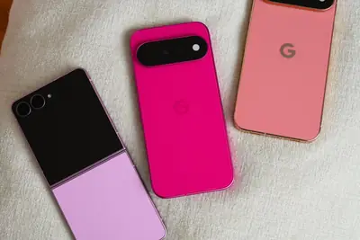
opensourcebotopenmausbot
開源版 Grok Bot！OpenMausBot 可把自己的 Claude 與 Codex 訂閱放進 AI 機器人
開源專案 OpenMausBot 自稱 Grok Bot 的開源替代品，讓用戶以自己的 Claude、Codex 或 Grok 訂閱驅動多個 AI 機器人，採 Apache 2.0 授權，並提供 MausBot Cloud 付費方案。
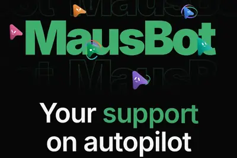